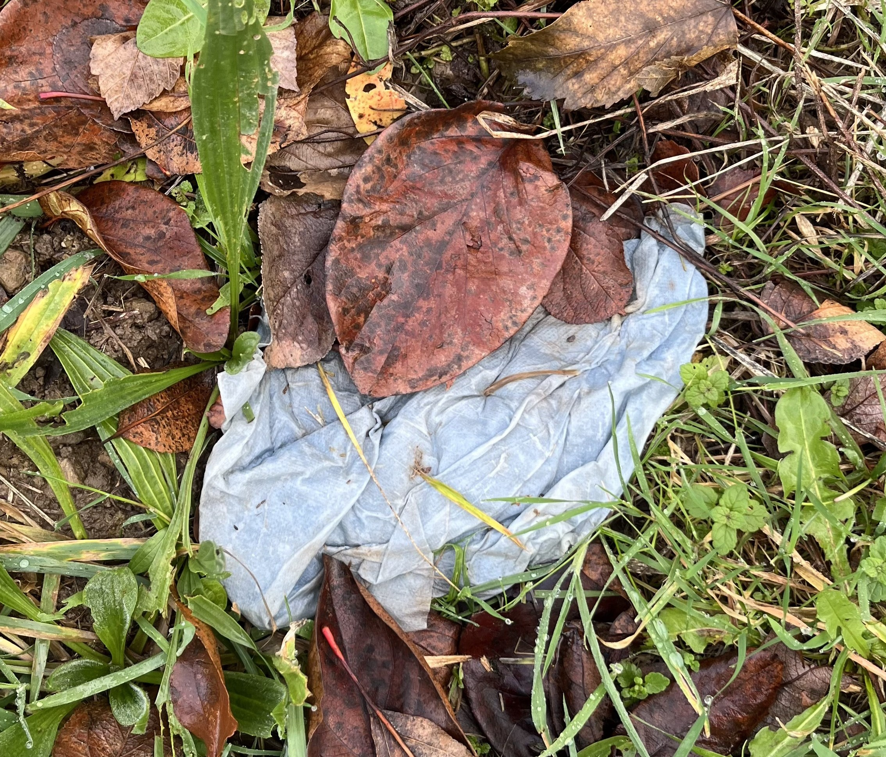

Irudiak / Imágenes Reales





1 / 11
Gure Espazio Benetakoa
11 irudi original Punto Verde/Garbigune de Eibar-Ermua ingurua. Naturan integratua, komunitatearentzat zabalik.
📍 Unibertsitate ondoan | ♻️ Birziklapen aktiboa | 🌿 Ingurumena babestua
Fotografiak: 2026ko urtarrila | IMG_8194-IMG_8204 seriea